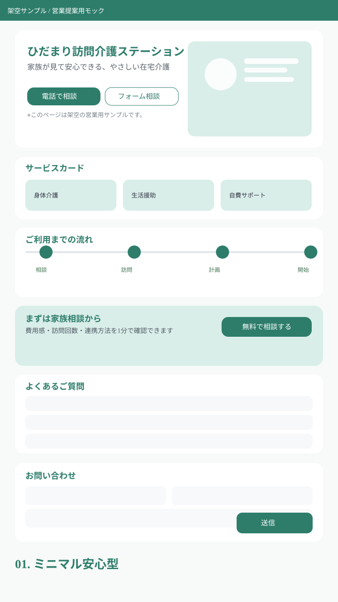
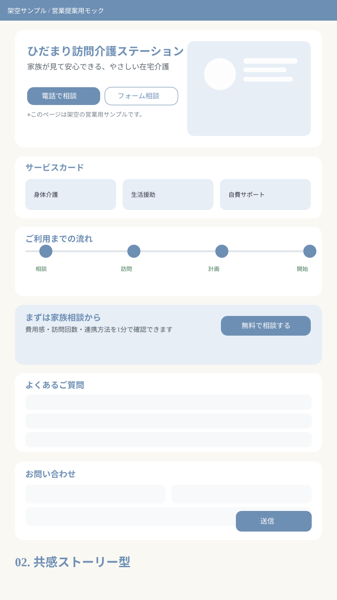
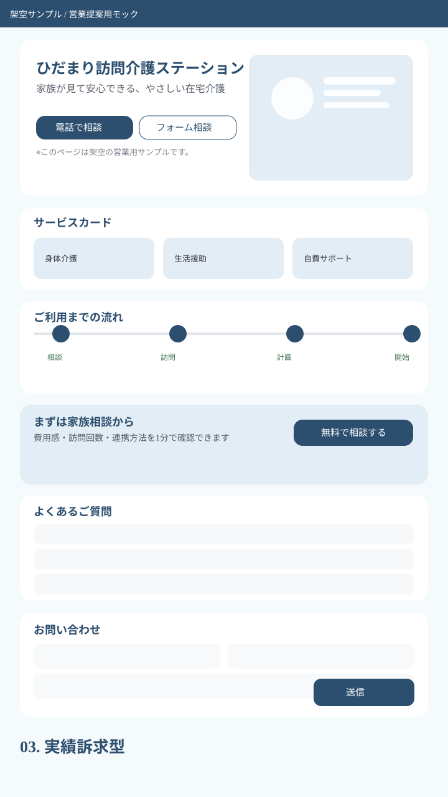
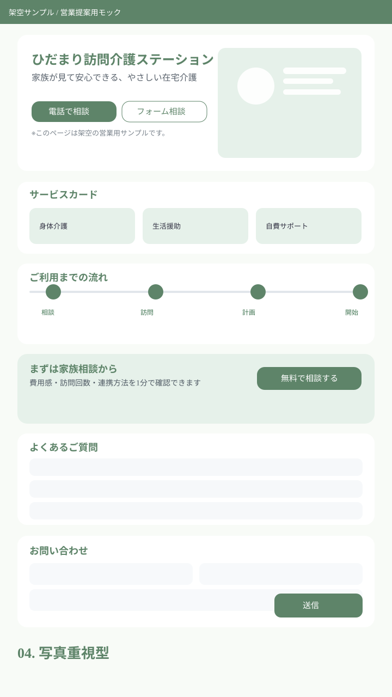
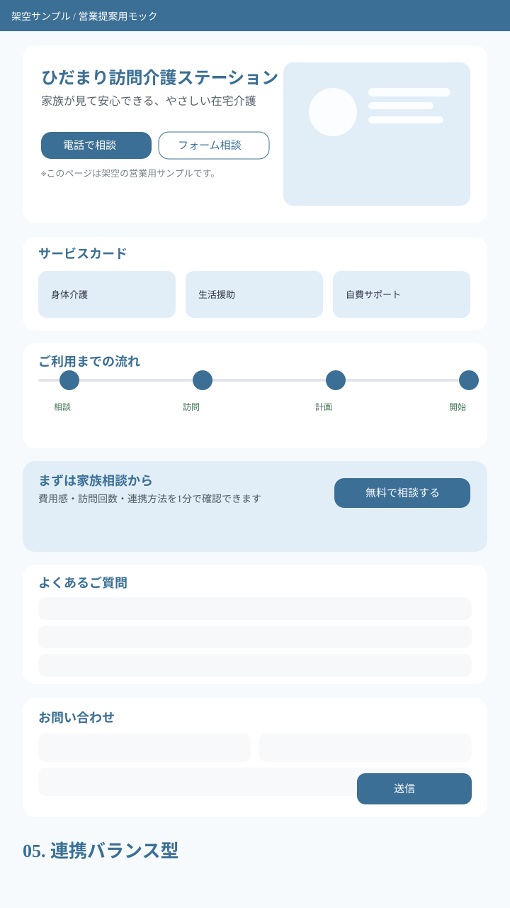
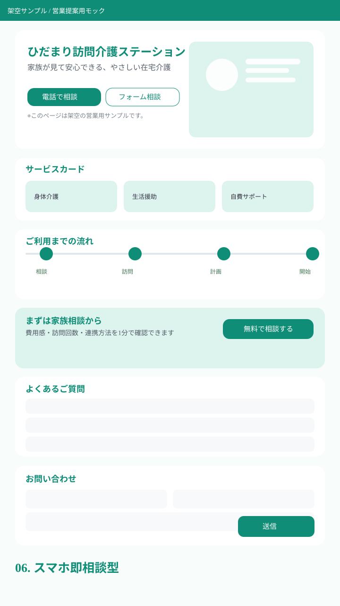
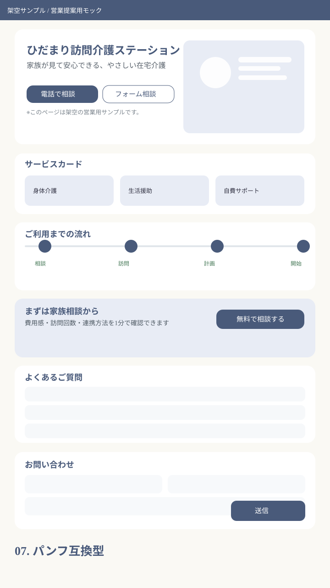
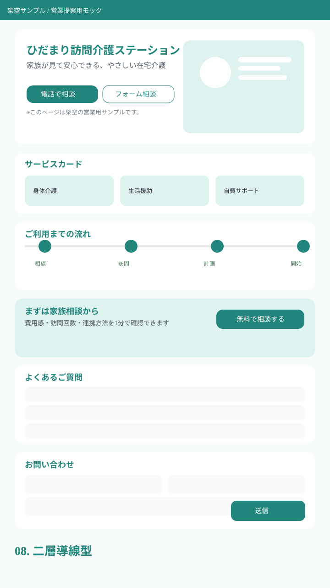
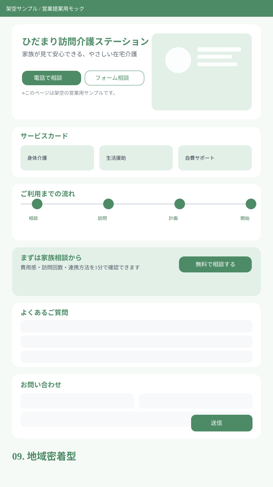
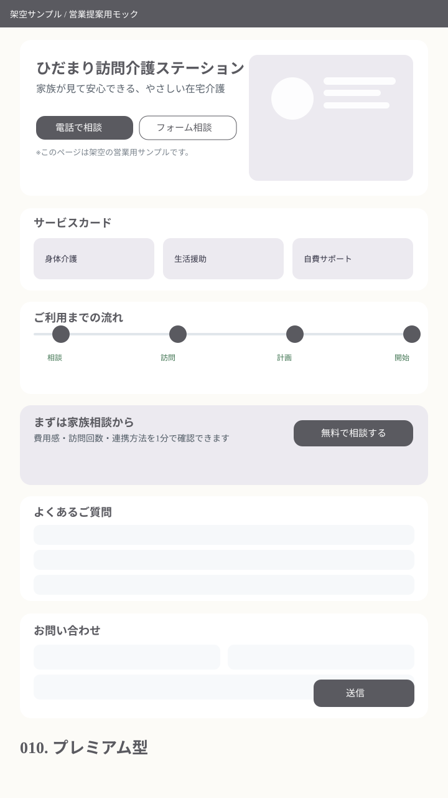

案01ミニマル安心型
コンセプト：余白を活かし、家族が迷わず相談できる王道デザイン。
想定ターゲット：初めて訪問介護を検討する家族

この案の強み：清潔感・可読性・導線の分かりやすさ
本ページは「案を選ぶための見えるラフ一覧」です。実在事業所情報は使用していません（架空サンプル）。
コンセプト：余白を活かし、家族が迷わず相談できる王道デザイン。
想定ターゲット：初めて訪問介護を検討する家族

この案の強み：清潔感・可読性・導線の分かりやすさ
コンセプト：不安の共感から解決までを順番に見せる構成。
想定ターゲット：相談ハードルが高い家族

この案の強み：悩み→解決の流れで問い合わせ率を高める
コンセプト：数値と体制を見せて信頼を積み上げる。
想定ターゲット：比較検討に慎重な家族・支援者

この案の強み：客観情報で安心材料を先に提示
コンセプト：生活シーンを大きく見せて温度感を伝える。
想定ターゲット：雰囲気重視の家族

この案の強み：サービス利用後のイメージが湧きやすい
コンセプト：やさしさと専門連携の両立を見せる。
想定ターゲット：家族＋ケアマネ・医療連携先

この案の強み：連携フローが明快で相談後の動きが見える
コンセプト：スマホで最短導線、固定CTAで迷わせない。
想定ターゲット：スマホ閲覧中心の家族

この案の強み：今すぐ連絡しやすいUI
コンセプト：紙面展開しやすい整列グリッド設計。
想定ターゲット：営業資料と連動したい事業所

この案の強み：Webとパンフの情報設計を統一
コンセプト：利用相談と採用導線を衝突させず分離。
想定ターゲット：家族メイン＋採用も見せたい運営者

この案の強み：目的別の導線で離脱を防ぐ
コンセプト：対応エリアと訪問速度を強く訴求。
想定ターゲット：地元で事業所を探す家族

この案の強み：地域性が一目で伝わる
コンセプト：上質なタイポと静かな配色で信頼感を強化。
想定ターゲット：品質重視の家族

この案の強み：古さを払拭しブランド印象を更新